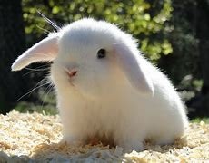

Conejo
Definición
Los conejos tienen un cuerpo compacto y robusto,
con un tamaño de 30 a 50 cm de largo y un peso
de 1.5 a 2.5 kg, aunque algunas razas pueden ser mayores.
Su pelaje es suave y denso, y puede ser de diversos colores
como blanco, gris, marrón o negro. Presentan orejas largas
y erguidas, ojos grandes situados a los lados de la cabeza
para un amplio campo visual, y patas traseras largas y fuertes
que les permiten saltar rápidamente. Sus dientes incisivos crecen
continuamente y están adaptados a su dieta herbívora, mientras que
su estructura física facilita la excavación y construcción de madrigueras.
Hábitat
Los conejos cuando se encuentran en estado
salvaje van a vivir en madrigueras escavadas
en la tierra. Estas madrigueras pueden llegar
a tener varios túneles para dificultarle el paso
a posibles depredadores que quieran entrar en ellas
buscando presas que comer. También son lugares muy oscuros,
pero a la vez muy calientes, ya que aquí suelen pasar la
mayor parte del tiempo.
Consejos
- Ofrece una dieta balanceada rica en proteínas,
siguiendo las indicaciones de un veterinario especializado.
-Realiza chequeos regulares con un veterinario especializado
en grandes felinos.
-Brinda estímulos y actividades para satisfacer sus
necesidades de caza y exploración.
- Asegura un entorno seguro y cumple con todas las
regulaciones legales sobre la tenencia de grandes felinos.
